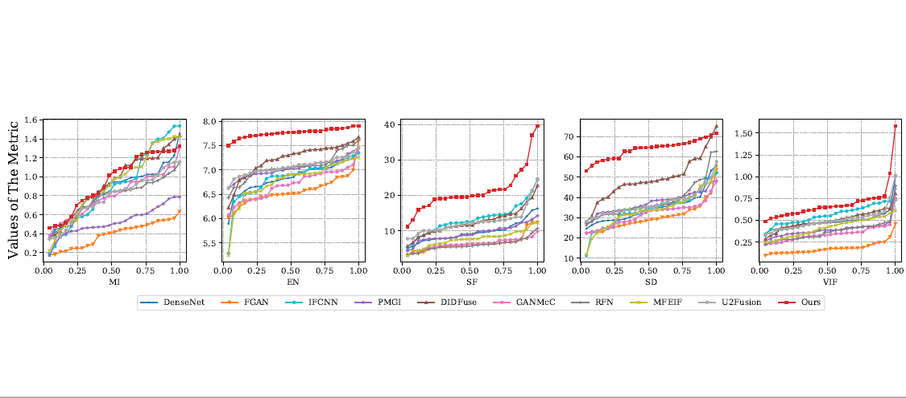
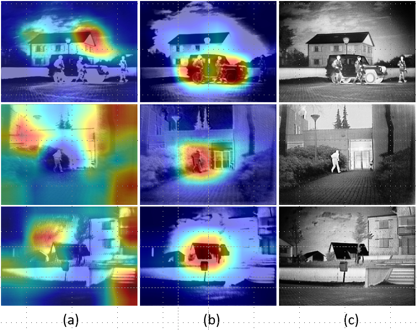

MACFuse: Multi-level Attention-guided Contrastive Learning for Infrared and Visible Image Fusion
The codes are also available.
Contributions
- The proposed dual attention strategy can obtain effective visible and infrared features to intensify the fusion of favorable features, by adopting global attention mechanism.
- To the best of our knowledge, we are the first to introduce contrastive learning to image fusion. By utilizing the mask-based contrastive guidance, the fused image can make use of both rich details from visible images and bright target information from infrared images, thus rendering superior saliency with vivid texture details.
- To guide the optimization of our network, a self-adaptive loss is devised, which automatically adapts to the characteristics of source images in the training phase.
Overall Architecture

Representative Results

Visualization of the proposed attention module

where (a) and (b) denote the feature map before and after attention, respectively. (c) denotes the final fused result.Reach me
E-mail: junko.lin@yahoo.com